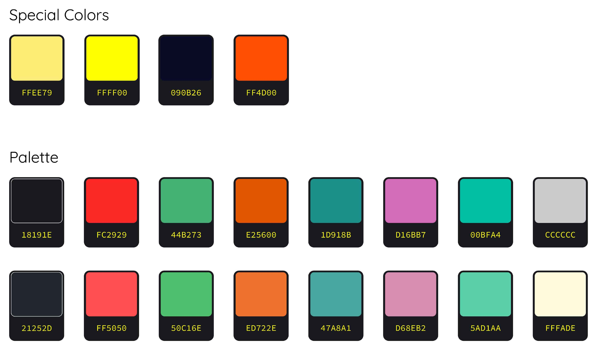

Designers have to use color schemes all the time for various applications and this is a perfect blend of colors that can be used in any combination.
The typical users of Lighthaus would be developers and designers. A developer has to write many lines of code to create softwares, apps etc. Colors and other UI elements play a major role in the softwares that developers use to write code in. A color scheme when used effectively can help developers quickly sift through and identify data within the many lines of code. Every color picked in this scheme has been picked for a purpose and has been adapted to various softwares.
This UI system aims to make it easier for developers to code and designers to create.
Special care has been given to make sure a contrast ratio of 4.5 exists between the background and foreground in accordance with the WCAG2.1 Guidelines. This ensures that people with low vision can also distinguish between the colors with ease.